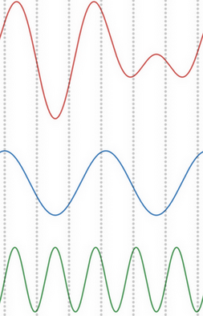

FFT
Table of Contents
1 FFT
1.1 dft
- dft 的计算公式为: \(X_k=\frac{2}{N}\sum_{n=0}^{N-1}x_n\cdot e^{-i*2\pi k\frac{n}{N}}\), \(k \in 0 \to N-1\), k 表示不同频率
其中的 \(e^{i\omega}\) 根据欧拉公式表示 \(cos(\omega)+i\cdot sin(\omega)\), 所以 dft 也可以写成 \(X_k=\frac{2}{N}\sum_{n=0}^{N-1}x_n\cdot(cos(-2\pi k\frac{n}{N})+i\cdot sin(-2\pi k \frac{n}{N})))\),
这里之所以用 \(-2\pi\) 而不是 \(2\pi\) 是有意让 sin 部分取负值, 后续计算 idft 会简单一点
- \(X_k\) 计算结果是复数的形式: \(X_k=amp\_of\_cos(k)+i \cdot amp\_of\_sin(k)\), 实际上表示两个数: cos(k) 和 sin(k) 的幅度
- N 称为 dft 的点数, 通常是 2 的 n 次幂, 例如 128, 因为后面 fft 算法要求 N 是 2 的 n 次幂.
dft 简单的说就是 x 与不同频率的 cos (和 sin) 在 N 个采样点的逐位相乘后再累加, 做为对应 cos (和 sin) 的幅度. 如下图所示:
- 红色是时域信号 x
- 蓝色是对应 cos(k=2)
- 绿色是对应 sin(k=5)
- 竖的灰线表示 N = 7, 灰线与红线和蓝线有 7 组交点, 两两相乘再累加, 即是 cos(k=2) 的幅度

一个简单的 dft 的代码如下:
void my_dft(int n_point, kiss_fft_cpx *in, kiss_fft_cpx *out) { for (int i = 0; i < n_point; i++) { float tmp_r = 0.0f; float tmp_i = 0.0f; for (int k = 0; k < n_point; k++) { tmp_r += in[k].r * cos(-1 * i * 2.0 * PI * k / n_point); tmp_i += in[k].r * sin(-1 * i * 2.0 * PI * k / n_point); } out[i].r = tmp_r; out[i].i = tmp_i; } }
1.2 idft
idft 与 dft 反过来:
\(x_n=\frac{1}{N}\sum_{k=0}^{N-1}X_k\cdot e^{i\cdot 2\pi k\frac{n}{N}}\)
按照 dft 的定义, x 是许多个频率不同的 cos 和 sin 的叠加, 所以计算 idft 时直接把所有频率 (k) 对应的 cos 和 sin 叠加起来即可.
由于 \(X_k\) 用复数表示, 所以展开后相当于 \(amp\_of\_cos(k)*cos(2\pi k \frac{n}{N})-amp\_of\_sin(k)*sin(2\pi k \frac{n}{N})\)
由于前面计算 dft 时 \(amp\_of\_sin(k)\) 实际是用的原值的对应的负值, 所以最终结果是正确的
简单的计算 idft 的代码:
void my_idft(int n_point, kiss_fft_cpx *in, kiss_fft_cpx *out) { for (int i = 0; i < n_point; i++) { float tmp = 0.0f; for (int k = 0; k < n_point; k++) { tmp += in[k].r * cos(2.0 * PI * i * k / n_point); /* 这里的 in[k].i 是负值, 所以用减号, 减号对应 i^2=-1 */ tmp -= in[k].i * sin(2.0 * PI * i * k / n_point); } out[i].r = tmp; out[i].i = 0.0f; } }
1.3 fft
fft 是计算 dft 的快速算法, 复杂度为 \(O(n\log(n))\) , 而前面提到的简单 dft 算法的复杂度是 \(O(n^2)\)
1.3.1 对称性
对称性是指 \(X_{k+N}=X_k\), 推导过程为:
\(X_k = \sum_{n=0}^{N-1}{x_n\cdot e^{-i2\pi{kn/N}}}\)
\(X_{k+N} = \sum_{n=0}^{N-1}{x_n\cdot e^{-i2\pi{(k+N)n/N}}} = \sum_{n=0}^{N-1}{x_n\cdot e^{-i2\pi{n}}\cdot e^{-i2\pi{kn/N}}}\)
\(e^{-i2\pi{n}} = 1\)
\(X_{k+N}=X_k\)
1.3.2 分治
把 N 个点按奇偶分成两部分:
\begin{eqnarray*} X_{k} &=& \sum_{n=0}^{N-1}{x_n\cdot e^{-i2\pi{kn/N}}} \\ &=& \sum_{m=0}^{N/2-1}{x_{2m}\cdot e^{-i2\pi{k(2m)/N}}} + \sum_{m=0}^{N/2-1}{x_{2m+1}\cdot e^{-i2\pi{k(2m+1)/N}}} \\ &=& \sum_{m=0}^{N/2-1}{x_{2m}\cdot e^{-i2\pi{km/(N/2)}}} + e^{-i2\pi{k/N}}\sum_{m=0}^{N/2-1}{x_{2m+1}\cdot e^{-i2\pi{km/(N/2)}}} \\ &=& E_k+factor*O_k \end{eqnarray*}其中 \(E\) (even), \(O\) (odd) 是大小为 \(\frac{N}{2}\) 的 dft
对 \(E\) 和 \(O\) 来说, 由于 \(E_k=E_{k-\frac{N}{2}} \mid k>\frac{N}{2}\), 所以当计算 \(X_k \mid {k>\frac{N}{2}}\) 时, 可以复用前一次归并时计算好的 \(E_{k-\frac{N}{2}}\) 而不需要再重复计算 \(E_k\), 所以其复杂度是 \(O(n\log(n))\)
1.3.3 递归实现
void my_recursive_fft(int n_point, kiss_fft_cpx *in, kiss_fft_cpx *out) { if (n_point == 1) { out[0].r = in[0].r; out[0].i = in[0].i; return; } kiss_fft_cpx *even_in = (kiss_fft_cpx *)KISS_FFT_MALLOC((n_point / 2) * sizeof(kiss_fft_cpx)); kiss_fft_cpx *even_out = (kiss_fft_cpx *)KISS_FFT_MALLOC((n_point / 2) * sizeof(kiss_fft_cpx)); kiss_fft_cpx *odd_in = (kiss_fft_cpx *)KISS_FFT_MALLOC((n_point / 2) * sizeof(kiss_fft_cpx)); kiss_fft_cpx *odd_out = (kiss_fft_cpx *)KISS_FFT_MALLOC((n_point / 2) * sizeof(kiss_fft_cpx)); for (int i = 0; i < n_point / 2; i++) { even_in[i] = in[i * 2]; odd_in[i] = in[i * 2 + 1]; } my_recursive_fft(n_point / 2, even_in, even_out); my_recursive_fft(n_point / 2, odd_in, odd_out); int mid = n_point / 2; for (int i = 0; i < mid; i++) { float twiddle_factor_r = cos(-2 * PI * i / n_point); float twiddle_factor_i = sin(-2 * PI * i / n_point); out[i].r = even_out[i].r + odd_out[i].r * twiddle_factor_r - odd_out[i].i * twiddle_factor_i; out[i].i = even_out[i].i + odd_out[i].r * twiddle_factor_i + odd_out[i].i * twiddle_factor_r; twiddle_factor_r = cos(-2 * PI * (i + mid) / n_point); twiddle_factor_i = sin(-2 * PI * (i + mid) / n_point); out[i + mid].r = even_out[i].r + odd_out[i].r * twiddle_factor_r - odd_out[i].i * twiddle_factor_i; out[i + mid].i = even_out[i].i + odd_out[i].r * twiddle_factor_i + odd_out[i].i * twiddle_factor_r; } }
1.3.4 非递归实现
由于分治时是以奇偶位置为准进行分组, 而不是像归并排序一样使用前半部/后半部, 导致分治时数据的分组会比较复杂.
可以事先交换数据的位置, 把它变成像归并排序一样使用前半部/后半部来分组, 以简化后续代码. 以 N = 8 为例:
0 1 2 3 4 5 6 7 0 2 4 6 | 1 3 5 7 0 4 | 2 6 | 1 5 | 3 7
最终交换后的数据为 `0 4 2 6 1 5 3 7`, 即:
- 0 和 4 进行第一步归并,
- 0,4 和 2,6 进行第二步归并
- 0,4,2,6 和 1,3,5,7 进行最后一次归并.
原 x[1] 位置应该放上 4, x[3] 应该放上 6, 通过观察发现 1 与 4, 3 与 6 的二进制是互为镜像的: 001 与 100, 011 与 110.
extern float twiddle_table[]; void my_fft( int n_point, kiss_fft_cpx *in, kiss_fft_cpx *out, int with_twiddle_table) { int rev[n_point]; for (int i = 0; i < n_point; i++) { rev[i] = 0; } /* NOTE: rev 用来保存 bit 前后翻转后的值, 然后根据 rev 对数据重排 */ int bit = (int)log2(n_point); for (int i = 1; i < n_point; i++) { rev[i] = (rev[i >> 1] >> 1 | ((i & 1) << (bit - 1))); } memcpy(out, in, n_point * sizeof(in[0])); for (int i = 1; i < n_point; i++) { if (i < rev[i]) { kiss_fft_cpx tmp = out[i]; out[i] = out[rev[i]]; out[rev[i]] = tmp; } } for (int mid = 1; mid < n_point; mid *= 2) { for (int j = 0; j < n_point; j += mid * 2) { for (int i = j; i < j + mid; i++) { kiss_fft_cpx even = out[i]; kiss_fft_cpx odd = out[i + mid]; int index = (int)log2(mid); float twiddle_factor_r = 0.0f; float twiddle_factor_i = 0.0f; if (with_twiddle_table) { twiddle_factor_r = twiddle_table[index * N * 2 + i * 2]; twiddle_factor_i = twiddle_table[index * N * 2 + i * 2 + 1]; } else { twiddle_factor_r = cos(-1 * PI * i / mid); twiddle_factor_i = sin(-1 * PI * i / mid); } out[i].r = even.r + odd.r * twiddle_factor_r - odd.i * twiddle_factor_i; out[i].i = even.i + odd.r * twiddle_factor_i + odd.i * twiddle_factor_r; if (with_twiddle_table) { /* printf( */ /* "%f %f %f %f %f %f | ", even.r, odd.r, * twiddle_factor_r, */ /* odd.i, twiddle_factor_i, out[i].r); */ twiddle_factor_r = twiddle_table[index * N * 2 + (i + mid) * 2]; twiddle_factor_i = twiddle_table[index * N * 2 + (i + mid) * 2 + 1]; } else { twiddle_factor_r = cos(-1 * PI * (i + mid) / mid); twiddle_factor_i = sin(-1 * PI * (i + mid) / mid); } out[i + mid].r = even.r + (odd.r * twiddle_factor_r - odd.i * twiddle_factor_i); out[i + mid].i = even.i + (odd.r * twiddle_factor_i + odd.i * twiddle_factor_r); } } } }
1.3.5 使用 twiddle table
\(even+factor*odd\) 使用的 factor 是一个常量, 可以提前计算出来, 叫做 twiddle table
产生 twiddle table:
void generate_twiddle_table(int n_point) { int bit = (int)log2(n_point); float twiddle_table[bit][n_point * 2]; int32_t twiddle_table_fixed[bit][n_point * 2]; for (int mid = 1; mid < n_point; mid *= 2) { for (int j = 0; j < n_point; j += mid * 2) { for (int i = j; i < j + mid; i++) { int index = (int)log2(mid); twiddle_table[index][i * 2] = cos(-1 * PI * i / mid); twiddle_table[index][i * 2 + 1] = sin(-1 * PI * i / mid); twiddle_table[index][(i + mid) * 2] = cos(-1 * PI * (i + mid) / mid); twiddle_table[index][(i + mid) * 2 + 1] = sin(-1 * PI * (i + mid) / mid); twiddle_table_fixed[index][i * 2] = (int)(twiddle_table[index][i * 2] * (1 << 15)); twiddle_table_fixed[index][i * 2 + 1] = (int)(twiddle_table[index][i * 2 + 1] * (1 << 15)); twiddle_table_fixed[index][(i + mid) * 2] = (int)(twiddle_table[index][(i + mid) * 2] * (1 << 15)); twiddle_table_fixed[index][(i + mid) * 2 + 1] = (int)(twiddle_table[index][(i + mid) * 2 + 1] * (1 << 15)); } } } FILE *fp = fopen("twiddle_table.c", "w"); fprintf(fp, "float twiddle_table[%d*%d] = {\n", bit, n_point * 2); for (int i = 0; i < bit * n_point * 2; i++) { fprintf(fp, "%f,", ((float *)twiddle_table)[i]); } fprintf(fp, "};\n"); fprintf(fp, "#include <stdint.h>\n"); fprintf(fp, "int32_t twiddle_table_fixed[%d*%d] = {\n", bit, n_point * 2); for (int i = 0; i < bit * n_point * 2; i++) { fprintf(fp, "%d,", ((int32_t *)twiddle_table_fixed)[i]); } fprintf(fp, "};\n"); fclose(fp); }
1.3.6 定点化
由于 fft 是线性变换, 所以定点化还是比较简单的. 为了避免对 sin, cos 定点化, 可以利用 twiddle table, 提前把 twiddle table 的结果转换为定点 (参考前面的 twiddle_table_fixed)
extern int32_t twiddle_table_fixed[]; typedef struct { int32_t r; int32_t i; } kiss_fft_cpx_fixed; static inline int32_t MUL_Q15(int32_t a, int32_t b) { return ((int64_t)a * (int64_t)b) >> 15; } void my_fft_fixed(int n_point, kiss_fft_cpx *in, kiss_fft_cpx *out) { int rev[n_point]; for (int i = 0; i < n_point; i++) { rev[i] = 0; } int bit = (int)log2(n_point); for (int i = 1; i < n_point; i++) { rev[i] = (rev[i >> 1] >> 1 | ((i & 1) << (bit - 1))); } memcpy(out, in, n_point * sizeof(in[0])); for (int i = 1; i < n_point; i++) { if (i < rev[i]) { kiss_fft_cpx tmp = out[i]; out[i] = out[rev[i]]; out[rev[i]] = tmp; } } /* convert out to fixed point */ kiss_fft_cpx_fixed *out_fixed = malloc(n_point * sizeof(kiss_fft_cpx_fixed)); for (int i = 0; i < n_point; i++) { out_fixed[i].r = (int32_t)(out[i].r * (1 << 15)); out_fixed[i].i = (int32_t)(out[i].i * (1 << 15)); } for (int mid = 1; mid < n_point; mid *= 2) { for (int j = 0; j < n_point; j += mid * 2) { for (int i = j; i < j + mid; i++) { kiss_fft_cpx_fixed even = out_fixed[i]; kiss_fft_cpx_fixed odd = out_fixed[i + mid]; int index = (int)log2(mid); int32_t twiddle_factor_r = 0; int32_t twiddle_factor_i = 0; twiddle_factor_r = twiddle_table_fixed[index * N * 2 + i * 2]; twiddle_factor_i = twiddle_table_fixed[index * N * 2 + i * 2 + 1]; out_fixed[i].r = even.r + MUL_Q15(odd.r, twiddle_factor_r) - MUL_Q15(odd.i, twiddle_factor_i); out_fixed[i].i = even.i + MUL_Q15(odd.r, twiddle_factor_i) + MUL_Q15(odd.i, twiddle_factor_r); twiddle_factor_r = twiddle_table_fixed[index * N * 2 + (i + mid) * 2]; twiddle_factor_i = twiddle_table_fixed[index * N * 2 + (i + mid) * 2 + 1]; out_fixed[i + mid].r = even.r + MUL_Q15(odd.r, twiddle_factor_r) - MUL_Q15(odd.i, twiddle_factor_i); out_fixed[i + mid].i = even.i + MUL_Q15(odd.r, twiddle_factor_i) + MUL_Q15(odd.i, twiddle_factor_r); } } } /* convert back to float */ for (int i = 0; i < n_point; i++) { out[i].r = out_fixed[i].r >> 15; out[i].i = out_fixed[i].i >> 15; } }